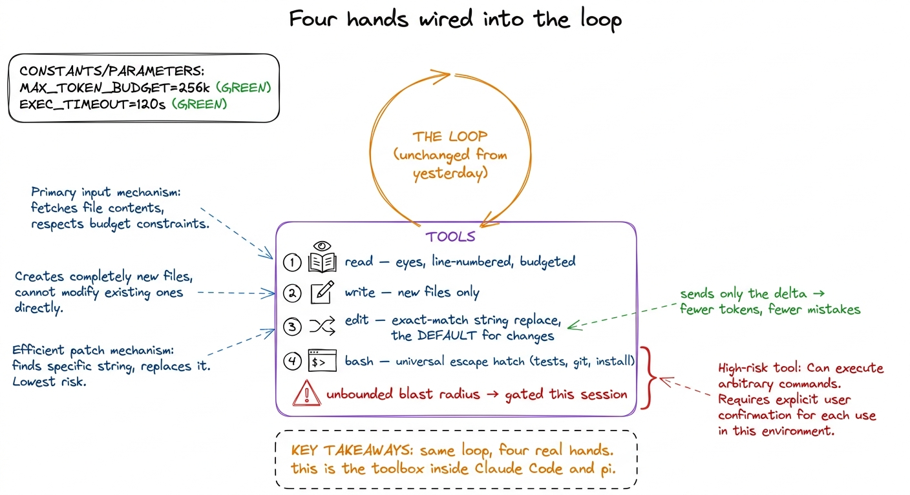
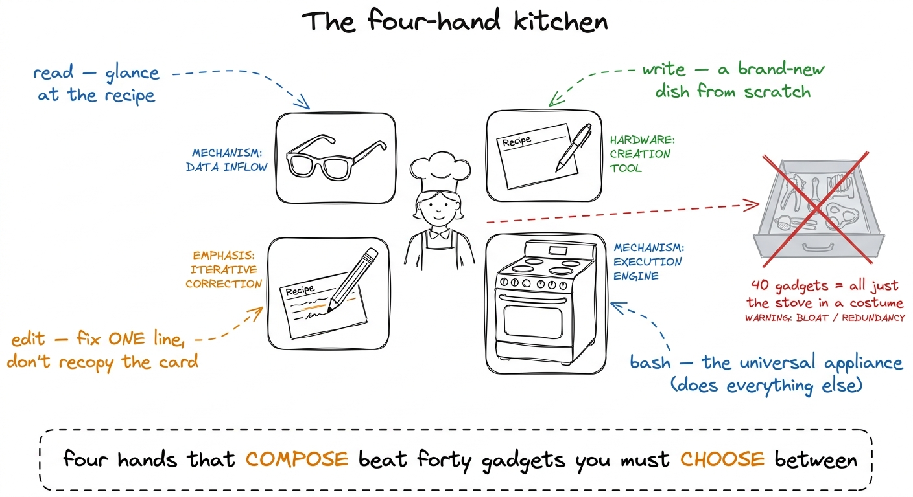
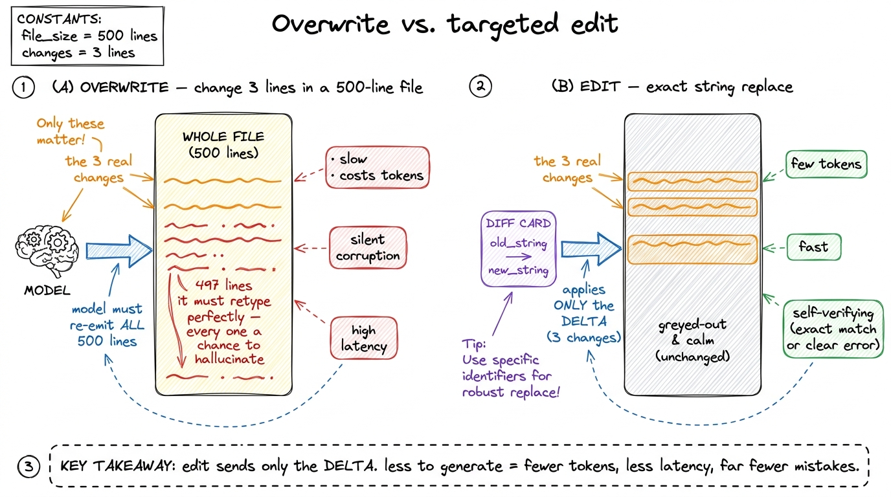
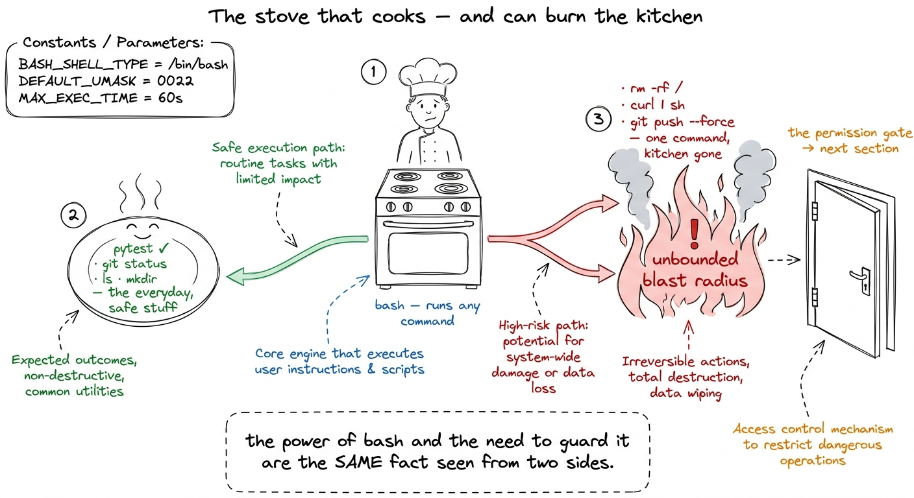
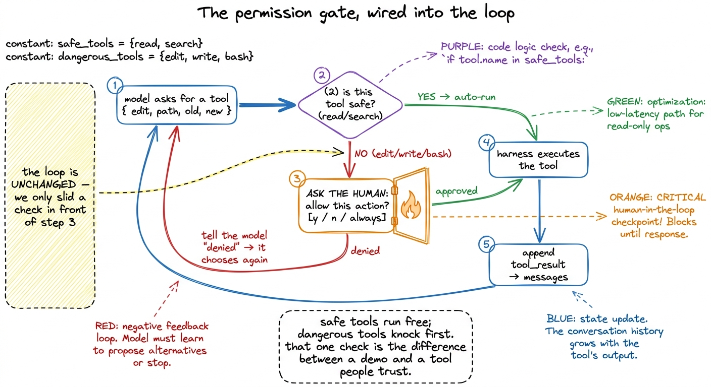

Teaching the tools build (live)
By the end of this chapter you can stand in front of the room and, live, turn a harness that only talks about code into one that edits real code — and do it so cleanly that when the agent silently fixes a bug in a file nobody touched, the room actually gasps. This is the morning where the abstraction becomes a machine with hands. You already taught the loop; now you bolt the tools into it. Own this and you own the emotional peak of the whole week.
The one idea to keep repeating: the loop was the mind; the tools are the hands. Last session the agent could think but not touch — a consultant in a booth. Today we open the booth door. And the moment we do, we have to talk about the one thing that keeps an agent with real hands from being terrifying: the permission gate.
Where we are: a loop with an empty toolbox
Remind the room where they stand. They have the ten-line loop: call the model, check the stop reason, run whatever tool it asked for, feed the result back, repeat. But so far the "tools" were toys — maybe a read_file that peeks at one file. The agent can look. It still can't change anything.
Today we hand it four real hands: read, write, edit, and bash. With those four wired into the loop, the same ten-line skeleton from yesterday becomes something that can open your repo, find the bug, rewrite the line, run the tests, and tell you it's green — with nobody typing but the model.

figure rendering · The four core tools bolted into yesterday's unchanged loop: read, writedit and bash, can rewrite your files and run any command on your machine. Power and danger arrive on the exact same morning. So we're going to build the hands and the thing that decides which movements are allowed — in the same session."The kitchen: four hands, not forty
Before any code, plant the metaphor that governs the whole design. A coding agent is a cook in a kitchen. You could hand a cook forty gadgets — a garlic press, an avocado slicer, an egg separator. Or you could hand them four things that do everything: eyes to read the recipe, a pen to write a new recipe, an eraser-and-pencil to fix one line of an old recipe, and a stove to actually cook (run anything). A great cook with those four out-cooks a fumbling cook drowning in forty single-use gadgets.

figure rendering · The governing metaphor: a coding agent is a cook with four composableThe one decision that defines the agent: edit vs. overwrite
Spend real time here — this is the technical heart of the morning. The question sounds boring: when the model wants to change an existing file, how does it say so? Two answers, night and day.
Overwrite: the model produces the entire new contents of the file, and you write it wholesale. Edit: the model says "find this exact string, replace it with that one," and your code does the surgical find-and-replace — the model only emits the few lines that actually change.
Make it concrete with a number: a 500-line file, the model wants to change 3 lines.
The edit tool is self-verifying, and that is the beautiful part. Because the model has to quote the old string exactly, if it misremembered the code, the match fails and it gets a clear error — "not found, go read the file and copy it verbatim" — instead of silently corrupting the file.
def edit_file(path, old_string, new_string):
text = pathlib.Path(path).read_text()
count = text.count(old_string)
if count == 0:
return "ERROR: old_string not found — read the file and copy it exactly."
if count > 1:
return f"ERROR: old_string matches {count} places — add surrounding lines to make it unique."
pathlib.Path(path).write_text(text.replace(old_string, new_string))
return "ok — 1 replacement"
figure rendering · Overwrite forces the model to regenerate every line it meant to leaveWrite reserved for brand-new files. Two tools, because they're honest about two different situations: write for "this file is new, the whole thing IS the change," edit for "this file exists, touch only what you mean to touch."bash: the stove that can also burn the kitchen down
The fourth hand makes the other three sufficient — and should keep you up at night. bash runs an arbitrary shell command and hands back the output. It's how the agent runs the tests, calls git, installs a package, makes a directory — everything the file tools don't. That's why you don't build a run_tests or git_commit tool: they'd just be bash with a fixed prefix, and the model already knows how to type pytest.
But say the danger out loud. A misjudged read wastes a few tokens. A misjudged bash can be rm -rf, curl something | sh, or git push --force. The same tool that runs your tests can delete your work.

figure rendering · bash is the universal appliance that makes four tools enough — and theThe fire door: the permission gate
Now the part that makes the whole thing shippable rather than reckless. We've built a loop that will run any command the model dreams up. We don't want to unplug that power — we want a gate between "the model asked" and "the harness does it."
Go back to the loop. Yesterday, step 3 was: WE run every tool the model asked for. Today we slide one check in front of it. Before executing a tool, we ask: is this allowed? Safe, read-only tools — read, search — run without asking. Dangerous ones — edit, write, bash — pause and ask the human: "the agent wants to run rm -rf build/. Allow it?"

figure rendering · The permission gate is a single check spliced in front of tool executiif not allowed(tool): result = "denied by user"; continue. Point at it: "that's it. That's the entire gate. Everything else — the pretty prompt, the 'always allow' memory, the sandbox — is polish on this one branch." Students expect governance to be complicated. It's a single if in front of run_tool. Under-selling its size is the whole lesson.A denied action isn't an error, and this is a lovely thing to point out: when the human says "no," we just feed the model the string "denied by user" as the tool result. The model reads that like any other fact and adapts — maybe it tries a gentler command, maybe it explains why it wanted to. The gate is a conversation, not a crash.
1 In the naked build you'll show the gate in its simplest form — a y/n prompt in the terminal. Real harnesses layer on top of this exact branch: an "always allow this command" memory so you're not spammed, an allow-list of safe commands that never prompt, and a sandbox so even an approved bash can't reach outside the project. All of it hangs off the one if.
The morning lecture plan (7:00–9:00 AM IST)
Two hours, three blocks, one live BUILD each. This is a building morning — the terminal is the star. Rehearse every demo until it's boring to you, because it will not be boring to them.
Block 1 — the four-hand kitchen and edit-vs-overwrite (7:00–7:45). Open with the kitchen metaphor and let the room argue their four favorite tools (7:00–7:12). Map them to read/write/edit/bash. Then the technical heart: overwrite vs. edit, the 500-lines-to-change-3 number on the board (7:12–7:30). Live build: write the edit_file function live, then break it on purpose — ask it to edit a string that appears twice, watch it refuse with the "matches 2 places" error (7:30–7:43). Checkpoint question: "The model quoted a line that isn't in the file. What happens — corruption, or a clean error?" (Answer: clean error; exact-match makes it self-verifying.)
Block 2 — wire all four into the loop, the gasp demo (7:45–8:30). Drop read, write, edit, bash into yesterday's ten-line loop — the loop itself doesn't change (7:45–7:55). Live build (the peak of the week): point the agent at a small repo with a genuinely failing test. Give it one sentence: "make the tests pass." Then stop typing and let the room watch — it reads the test, reads the source, edits the real file, runs pytest, sees green (7:55–8:22). Say nothing while it works; let the silence build. Checkpoint question: "How many of those steps did I script?" (Answer: zero — same loop as yesterday, the model drove every one.)
Block 3 — the fire door, danger and the gate (8:30–9:00). Now the necessary sober turn. Show that the very same agent will happily run rm -rf if it decides to (8:30–8:40). Live build: splice the one-line permission gate in front of tool execution; re-run a task, and this time a bash action pops the allow? [y/n] prompt — approve one, deny one, and show the denial flowing back as a fact the model adapts to (8:40–8:55). Close by mapping this to Claude Code's approval prompts and previewing the sandbox (8:55–9:00). Checkpoint question: "The human said no. Did the agent crash?" (Answer: no — 'denied' is just another tool result it reasons about.)
test_math.py expects add(2,3)==5 but add returns a-b. Run it live, one sentence in, then take your hands off the keyboard. The read → read → edit → pytest → green sequence, with you saying nothing, is the gasp. Rehearse until the timing is muscle memory — and have a backup recording, because a live agent on stage is the one thing you cannot fully control.You can now teach
- The four-hand kitchen: why a coding agent needs only read, write, edit, and bash — eyes, a fresh card, a pencil, and a stove — and why forty gadgets are just the stove in costumes.
- Edit vs. overwrite as the single biggest lever on reliability: the 500-lines-to-change-3 number, why overwrite invites silent corruption, and why exact-match edit is self-verifying.
- bash as the universal escape hatch that makes four tools enough — and the honest danger (
rm -rf,curl | sh) that comes with unbounded blast radius. - The permission gate as a fire door: one
ifin front of tool execution, safe tools auto-run, mutating tools knock first, and a denial is just another fact the model adapts to. - The production link: this exact four-tool set plus an approval gate is what ships in Claude Code, pi, and Cursor today.
- The full 7:00–9:00 AM live-build lecture: three blocks, the hands-off failing-test demo that makes the room gasp, the gate spliced in live, and the checkpoint questions that prove the loop never changed.